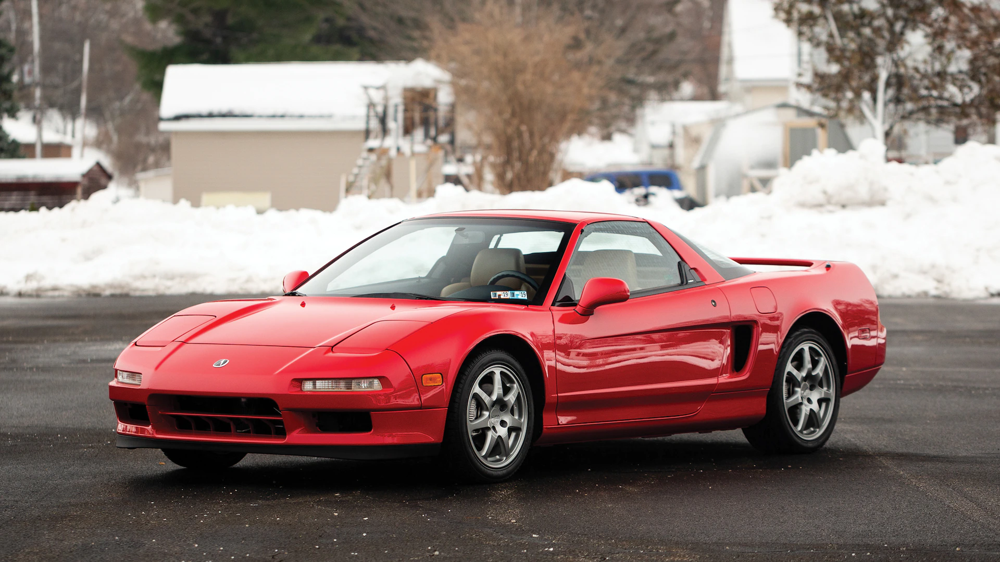

Na década de 1990, no Japão, a maioria dos carros produzidos eram entediantes, pequenos e desenhados para serem econômicos, mas um grupo de engenheiros da Honda começou a contemplar como seria construir um carro com motor central e, dessa ideia, surgiu o NSX. Com o propósito de criar um carro esportivo para uma nova era, os engenheiros estudaram vários carros - entre eles Ferraris e Porsches - para pegar suas características principais e reunir todas elas em um só carro. Com um monocoque inteiro de alumínio e ajuda de Ayrton Senna (mesmo que por pouco tempo), a Honda foi, lentamente, aperfeiçoando o protótipo e criando uma máquina que revolucionaria os carros esportivos. Com um simples V6, o NSX conseguiu superar todos seus concorrentes e provar ao mundo que era possível criar um carro esportivo que fosse confortável, confiável e rápido, ao contrário do que as montadoras europeias faziam.